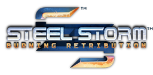

Steel Storm
Dieser Artikel wurde für die folgenden Ubuntu-Versionen getestet:
Ubuntu 16.04 Xenial Xerus
Zum Verständnis dieses Artikels sind folgende Seiten hilfreich:

Steel Storm  ist ein Top-Down-Shooter, welcher in einem Paralleluniversum spielt. Man steuert einen mit Waffen ausgestatteten Schwebepanzer und bekämpft Horden von intelligenten Aliens. Im Mehrspieler-Modus wird neben Deathmatch der CO-OP-Modus unterstützt. Das Spiel setzt auf die DarkPlaces engine und kann über das Internet mit bzw. gegeneinander gespielt werden. Während der erste Teil des Spiels kostenlos heruntergeladen werden kann ist der zweite Teil Burning Retribution käuflich auf der Herstellerseite zu erwerben. Dieser war ebenfalls Bestandteil des Humble Indie Bundles #3. Eine ebenfalls käuflich zu erwerbende Erweiterung bringt zusätzliche Waffen- und Ausrüstungsgegenstände mit sich.
ist ein Top-Down-Shooter, welcher in einem Paralleluniversum spielt. Man steuert einen mit Waffen ausgestatteten Schwebepanzer und bekämpft Horden von intelligenten Aliens. Im Mehrspieler-Modus wird neben Deathmatch der CO-OP-Modus unterstützt. Das Spiel setzt auf die DarkPlaces engine und kann über das Internet mit bzw. gegeneinander gespielt werden. Während der erste Teil des Spiels kostenlos heruntergeladen werden kann ist der zweite Teil Burning Retribution käuflich auf der Herstellerseite zu erwerben. Dieser war ebenfalls Bestandteil des Humble Indie Bundles #3. Eine ebenfalls käuflich zu erwerbende Erweiterung bringt zusätzliche Waffen- und Ausrüstungsgegenstände mit sich.
Beide Versionen bringen den Editor "Sand Storm" für Missionen mit.
| Menü | Episode 1 | Episode 2 |
Episode 1¶
Installation¶
Das Spiel kann von einer der folgenden Seiten heruntergeladen werden:
Anschließend das Archiv in das Homeverzeichnis - z.B. nach ~/Spiele/steelstorm - entpacken [1]. Das Spiel kann nun durch die Eingabe von steelstorm bzw. steelstorm64 im Installationsverzeichnis gestartet [2] werden.
Es empfiehlt sich einen Menüeintrag [3] vorzunehmen.
Patch¶
Den Patch von holarse-linuxgaming.de  herunterladen und entpacken [1]. Die Dateien und Ordner in den Spieleordner kopieren.
herunterladen und entpacken [1]. Die Dateien und Ordner in den Spieleordner kopieren.
Episode 2¶
Installation¶
Desura¶
Nachdem man das Spiel über die Internetseite oder den Client erworben hat kann das Spiel installiert [7] und über diesen gestartet werden.
Humble Indie Bundle #3¶
Archiv¶
Das Paket steelstorm-br-2.00.02818-release.tar.gz aus der Aktion Humble Indie Bundle herunterladen und in das Homeverzeichnis entpacken [1] (z.B. nach ~/Spiele/steelstorm2). Anschließend in das Installationsverzeichnis wechseln und das Spiel durch Eingabe von steelstorm bzw. steelstorm64 starten.
Auf Wunsch einen Menüeintrag [3] vornehmen.
Ubuntu Software-Center¶
Steel Storm: Burning Retribution kann über das Software-Center käuflich erworben werden. Dazu ist eine Registrierung bzw. ein Zugang über Ubuntu One erforderlich, welchen man sich aber auch während des Zahlungsprozesses über das Software-Center anlegen kann. Anschließend wird das Spiel automatisch heruntergeladen und installiert. Für zukünftige Updates wird eine neue Paketquelle hinzugefügt.
Erweiterungen¶
Desura¶
Die Erweiterung Steel Storm Weapon Pack DLC kann über die Vertriebsplattform gekauft und installiert [7] werden.
Update¶
Desura¶
Sofern man das Spiel über den Client von Desura startet wird man automatisch über Updates informiert.
Humble Indie Bundle #3¶
Käufer des Spiels aus dem HIB#3, werden nach der Aktivierung des Spiels unter Steam, mit den benötigten Linuxpaketen versorgt. Der CD Key ist auf der Seite Humble Indie Bundle #3 zu ersehen.
Server¶
Um einen Server zu betreiben bearbeitet man im Installationsverzeichnis die Dateien server.cfg und server_dm.cfg, welche im Unterordner gamedata zu finden sind, mit einem Editor [5]:
server.cfg¶
hostname "Steel Storm Episode 1 custom CO-OP" sv_gamemode 0 // 0 = Campaign Mode, 1 = Deathmatch Mode campaign "episode 1: ashes to ashes" // this only needs to be set for Campaign Mode mission "acquisition" // the name of the mission to run at server start alias startmap_dm "map sslevel00" // the map used by the mission running at server start maxplayers 8 // maximum number of players allowed to join the server teamplay 1 // 0 = teammates can damage eachother fraglimit 20 // number of frags a player must reach in deathmatch before ending the match. 0 = endless match capturelimit 5 // number of flag captures a team must reach in CTF before inding the match. 0 = endless match sv_multiplayer_dropitems 1 // players drop items on death sv_itemrespawndelay 20 // amount of time before each item respawns sv_weaponrespawndelay 40 // amount of time before each weapon respawns sv_manualmissionrotation 0 // 1 lets the server choose the next mission instead of refering to the missions.txt file in data/gamemode/ or specific campaign folders sv_emptyserverrestarttime 15 // minutes after a player leaves and the server stays empty before restarting the map sv_maxscoreviewingtime 60 // number of seconds players are allowed to view the scoreboard before the mission change is forced port 26000 // the port used by the server sv_public 1 // 0 if the server should not be on the public servers list sv_status_privacy 0 // 1 hides IP addresses from "status" replies shown to clients
server_dm.cfg¶
hostname "Steel Storm Episode 1 custom DM" sv_gamemode 1 // 0 = Campaign Mode, 1 = Deathmatch Mode campaign "" // this only needs to be set for Campaign Mode mission "collector" // the name of the mission to run at server start alias startmap_dm "map sslevel01" // the map used by the mission running at server start maxplayers 8 // maximum number of players allowed to join the server teamplay 1 // 0 = teammates can damage eachother fraglimit 20 // number of frags a player must reach in deathmatch before ending the match. 0 = endless match capturelimit 5 // number of flag captures a team must reach in CTF before inding the match. 0 = endless match sv_multiplayer_dropitems 1 // players drop items on death sv_itemrespawndelay 20 // amount of time before each item respawns sv_weaponrespawndelay 40 // amount of time before each weapon respawns sv_manualmissionrotation 0 // 1 lets the server choose the next mission instead of refering to the missions.txt file in data/gamemode/ or specific campaign folders sv_emptyserverrestarttime 15 // minutes after a player leaves and the server stays empty before restarting the map sv_maxscoreviewingtime 60 // number of seconds players are allowed to view the scoreboard before the mission change is forced port 26000 // the port used by the server sv_public 1 // 0 if the server should not be on the public servers list sv_status_privacy 0 // 1 hides IP addresses from "status" replies shown to clients
Serverstart¶
Im Installationsverzeichnis stehen steelstorm-dedicated und steelstorm-dedicated64 - je nach Architektur - zur Verfügung. Gestartet wird der Server (Beispiel 64-Bit) durch [6]:
Server-Spiel¶
Um ein Serverspiel zu betreten wählt man im Spiel "Mehrspieler -> Server betreten" den gewünschten Server aus.
| Serverliste | ||
| Episode | Variante | Server |
| Episode One | Deathmatch | holarse-linuxgaming.de: Steel Storm Deathmatch |
| Episode One | Coop | holarse-linuxgaming.de: Steel Storm Coop |

Infobox¶
| Steel Storm | |
| Originaltitel: | Steel Storm |
| Genre: | Strategie |
| Sprache: |  |
| Veröffentlichung: | 2010 / 2011 |
| Publisher: | Kot-in-Action Creative Artel |
| minimale Systemvoraussetzungen: | 2.0 GHz-Prozessor / 1024 MB RAM / 256 MB Grafikkarte / ca. 320 MB bzw. 800 MB Festplattenplatz |
| Medien: | Download |
| Strichcode / EAN / GTIN: | - |
| Läuft mit: | nativ |
- Erstellt mit Inyoka
-
 2004 – 2017 ubuntuusers.de • Einige Rechte vorbehalten
2004 – 2017 ubuntuusers.de • Einige Rechte vorbehalten
Lizenz • Kontakt • Datenschutz • Impressum • Serverstatus -
Serverhousing gespendet von